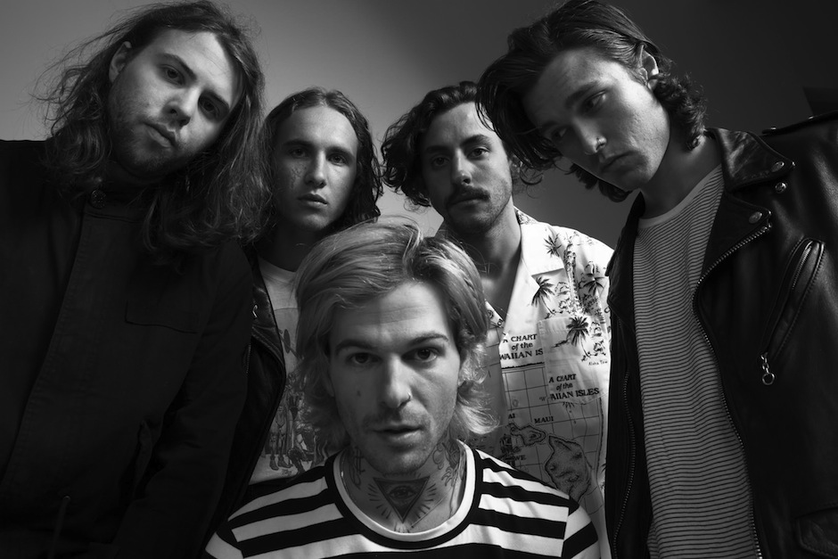

Jesse Rutherford
Jeremy Freedman
Zach Abels
Mikey Margott
★Integrantes
- Jesse, es el vocalista
- Jeremy, es uno de los dos guitarristas
- Zach, es el segundo guitarrista
- Mikey, es el bajista
Bryan SammisBrandon Fried- I Love You. (2013)
- #000000 & #FFFFFF (2014)
- Wiped Out! (2015)
- Hard To Imagine The Neighbourhood Ever Changing (2018)
- Chip Chrome & The Mono-Tones (2020)

★Discografía
☆El primer álbum de estudio I Love You, apareció en abril de 2013 con un total de once canciones e inmediatamente se convirtió en un éxito. ☆Al año siguiente, apareció el sencillo Honest, que formaba parte de la banda sonora de The Amazing Spider-Man 2, seguido del mixtape # 000000 & #FFFFFF (2014). # 000000 & #FFFFFF (2014). ☆Su segundo álbum de estudio, Wiped Out!, fue lanzado el 30 de octubre de 2015. Y tras su lanzamiento encabezó el listado de álbumes alternativos de Billboard. ☆En marzo del mismo año se estrenó, The Neighborhood (2013), el tercer álbum del grupo con el sencillo Scary Love y las canciones Flowers, Nervous, You Get Me So High, Stuck with Me y Blue, entre otras. Le siguieron Ever Changing(2018) y el compilado Hard to Imagine the Neighborhood Ever Changing(2018), publicado en noviembre del mismo año. ☆Los éxitos siguieron con el lanzamiento de Middle of Somewhere, en 2019 y del sencillo Cherry Flavored, en agosto de 2020. En septiembre, salió Chip Chrome & the Mono-Tones (2020), cuarto álbum de estudio del grupo, incluyendo temas como Devil’s Advocate, Pretty Boy, Silver Lining y Lost in Translation. Una versión Deluxe del álbum fue publicada en diciembre del mismo año.
¿Qué Pasó?
En noviembre de 2022, la banda The Neighbourhood se vio envuelta en una controversia después de que María Zardoya, miembro del grupo The Marías, acusara a Brandon Fried, uno de los miembros actuales de la banda, de acoso. Después de tomar una decisión, la banda anunció en sus redes sociales que Brandon Fried había sido expulsado del grupo. Tras más de una década activos con la banda, decidieron tomarse un descanso indefinido.Si bien, para los fans de esta agrupacion (incluyendome) puede ser un tema sensible hablar de la banda, ya que no se espera un regreso de ellos... Igual les quiero recomendar esta gran banda y quien sabe, tal vez nos puedan sorprender en un futuro no tan lejano. Dicen que la esperanza es lo ultimo que muere y yo tambien lo creo! En fin te dejo link a su spotify, su instagram (inactivo) y su pagina oficial.


Para recibir recomendaciones nuevas, informacion, chismes, etc, deja tu correo!